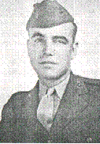

Dear John,
Sorry to be so long in responding to your request for items for the Company history. I had originally thought I just didn't remember anything of particular interest and sort of put it aside, but then got to looking at it again the other day (particularly the interesting items about Butchko and Cammack) and I thought I'd at least give it a try. So here goes, even though some items undoubtedly aren't that fascinating:
(1) I've always remembered an incident at New River involving an officer I will call Captain Smith. (You know his real name and I'm sure he's deceased, but I think it's best to use a fictional name). You may recall that at some point he was forced down our throats (no fault of his, poor guy) to replace Captain Eberhardt (then a Lieutenant) as Company CO. He was not a good officer to begin with - had a rather odd personality, didn't handle subordinates (officers or enlisted) well, and I don't think had had any previous infantry experience. On top of that, he'd been given an impossible mission - replacing the best (and best liked and respected) CO in the Division, trying to lead officers and men who wanted no part of him.
Well, we were out on a field problem of some kind on a hot day in New River, marching along a dusty little country road, Captain Smith at the head of the column. He called a break, and everybody initially sat down beside the road. There was a well at a nearby farmhouse, however, and nearly everybody went over to fill canteens. We came back to the road, and just before we got under way again, somebody brought the Captain a carbine that had been left at the well.
He was immediately out in the middle of the road (you'll remember he was a great big guy), waving the carbine over his head and shouting loudly, "All right, there's always some knot head who can't take care of his weapon - whoever left this carbine at the well, come and get it" etc. etc. This went on for several seconds, and then his runner sneaked up beside him and said "Captain, I think it's yours." It was.
(2) I almost had an equally embarrassing moment myself. I think it was at New River, but it might have been Pendleton. Captain Eberhardt was sick or unavailable for some reason, and assigned me to command the company at some sort of ceremony at regimental headquarters. It was in a rather constrained area, and after the thing was over the company was lined up in front of me with its right flank (to my left) only a few yards from a wall or barrier of some kind. The company street or passage we needed to use to leave the area was to left of the company's left flank (which was to my right).
I'll use a little diagram to try to make it a little
clearer: | _________________________________ I think I wouldn't have had a problem if it had been just my
own platoon. However, I'd never commanded the whole company before, and I got a little
confused (or rather, a whole lot confused). I gave the commands "Right shoulder arms", and
"left face", and was starting to direct the company out of there ass backwards, with the foot
of the column leading the way. Colonel Jones and his staff were on a platform close behind
me. I had just given the command "Forward" and was about to call "March" when, thank God,
I heard Colonel Jones say to an aide, "Now watch this!". Just in time, I realized how screwed
up I was, screamed out "As you were", and then "About Face" followed by "Forward March" and a
couple of quick "Column lefts", and marched the hell out of there. I'm sure Colonel Jones
was bitterly disappointed to have lost an anecdote he would have told and retold, I'm sure,
for years thereafter. (3) I was assigned to B Company (Lt. Reinhold) when I first
arrived in New River in September or October of 1942. I spent several months there as a
platoon leader, but then was assigned, against my will, as an assistant to Lt. Weinstein, who
was BN-3 on the battalion staff. I had nothing against Lt. Weinstein (and in fact we
are still good friends - he lives in the Detroit area), but I did not want to be a staff
officer; I wanted to be a line officer. Ultimately I got re-assigned as a line officer, to C Company.
Not long thereafter I was standing with Lt. Eberhardt watching the battalion staff walk by
on some occasion or other. I remember muttering to him "There but for the grace
of God go I" (4) I was indebted to Lt. (now General) Weinstein for some
advice he gave me at New River. I had become engaged (to my now wife of almost 57 years).
Housing for married lieutenants was virtually non-existent. The Marine quarters at
"Midway Park" for married NCO's and officers were great and only $28 per month, but there
was a waiting list a mile long. I finally signed a lease for a private, cardboard housing
development for $110 per month, and paid a deposit. Subsequently, I was amazed to be
notified that I could have one of the Midway places. That night I happened to sit next to
Bill Weinstein at the officers' club bar. I moaned about my predicament, and said I was doubtful I
would get my deposit back when I told my private landlord that I wanted to dump him for the
much cheaper (and better) Midway quarters. Bill was quick to straighten me out. He
immediately said, "Oh, hell, don't tell him about the Midway quarters. Tell him you got
a "Dear John" letter and you're nor getting married." I'm ashamed (I think) to say that I
did do that, and it worked like a charm. My conscience still bothers me (a little)
to this day. (5)One memory of Pendleton involves the "abandon ship"
practice in the swimming pool, where we jumped from heights of 15, 25 and ultimately
("graduation day") 35 feet, feet first into the pool. I remember being scared to death of
that 35-foot platform, but mindful that I was an officer and supposed to be a fearless leader
and example for the men. My solution was to go to the head of the line and get up there and
get it over with as soon as possible, before I had time to think about it and chicken out.
I did so, and thankfully I made it. I hoped that the men would just think I was a gutsy,
marvelous guy, rather than recognizing that I was really just a wimp who didn't have the
nerve to wait his turn. (6) My other California memory involves "Doc" Mulford, one of our
battalion doctors. (I think the other one's name was Courtney). Doc Mulford was a
favorite among the officers, partly because he was just a hell of a good guy, but also because he
would always make sure, before every combat landing, to give each of us one or two little
flasks of the medicinal brandy he was provided as part of his medical supplies. One of our landing exercises at Pendleton occurred on a
particularly cold night (October? November?). After we'd landed, a number of men had started
to build fires with the plentiful beach driftwood. Soon word came down from regiment - "no
fires; these would never occur in combat conditions." Doc Mulford, concerned as always
about the health of the battalion's men, went personally to regimental headquarters to see
Colonel Jones. He said "You know, Colonel, you can't practice being miserable." Needless to say, Doc pleaded in vain. The order stood - no fires. (7) Aboard ship to the Marshalls, I remember a " censoring"
incident. I should say preliminarily that we officers dreaded the censoring routine just as
much as I'm sure the men did. We had no desire whatever to be intruding on the private
lives of the men. However, that was the order. One of the first letters I had to read was from a young private
(could his name have been Rasmussen?) who was from the Pittsburg area. At that time, the University
of Pittsburg had a very famous All-American quarterback whose name was Marshall Goldberg.
I would say his name was about as familiar as the name John Elway today. The letter I had to read and censor (on our way to the
Marshall Islands) said "I can't tell you where we're going, but do you remember
the first name of the Pittsburg quarterback named Goldberg?" More in sorrow than in anger, I had to call in the private
and point out that he had grossly insulted both my intelligence and my knowledge of the
American athletic scene. (8) The other memorable letter I read (but did not censor) was noteworthy, I (9) After I became CO of B Company, the regiment staged at
Honolulu preparatory to embarking for Iwo. The companies were on separate LST's, docked in
Honolulu harbor. Some of my B Company men (including a couple of a squad leaders) sneaked
out of the dock area and ended up in a nightclub or bar several blocks down the street.
This was reported to me in some way or other, and I took off, with a couple of my men, to
rescue my wandering children from the evils of the big city. There were 8 or 10 of them, I think, and I herded them back
to the dock area. As we approached the gate, however, a group of C Company men were
standing by the fence. Somebody made a smart-ass remark, somebody responded, somebody
pushed somebody, and all of a sudden we had a good-sized brawl in the middle of the street,
involving about 20 or 30 men. I was very anxious to break up that brawl, for two reasons:
(1) it was obviously very improper conduct, which made the Marine Corps look bad; and
(2) perhaps more importantly, I sure as hell didn't want Army MP's to throw a bunch of guys
in the brig (including two very good squad leaders) and thereby derive me of people I was
going to need very badly at Iwo. So - I waded into the middle of the thing, shouting at
everybody to knock it off. (Since I was an officer, I certainly couldn't try to get physical;
I kept my hands to my sides). My critical moment came when I stepped between a C Company
guy (no idea who it was) and a B Company corporal named Gates, who was a very powerfully
built young man (and very drunk). Gates had his head down, and was swinging away wildly.
As I said, my hands were at my sides. He had a roundhouse right headed straight for my
chin when I shouted "Gates!" , and he raised his (bloodshot) eyes just in time, saw me, and
checked his swing. I was very relieved, both for him and me. As a postscript, I busted the two squad leaders, who were
corporals, down to PFC. Later, aboard ship on the way to Iwo, they evidently had consulted
with some jailhouse lawyers among the troops, and came to see me. They said that since they
no longer had the rank, they didn't think they should have the responsibilities of squad
leaders. I told them to get the hell out of there, and they were squad leaders, rank or
no rank, until I told them otherwise. (10) Finally, one of my fondest memories concerns an illegal act
by Champ McDaniel. (That's Captain McDaniel; his name is Stanley Champ McDaniel, and we never
called him anything but Champ. He and I were in the same Officers Candidates' Class at
Quantico, and he and his wife are our treasured friends today). There's really not much to the incident. I think it was the
night before D-Day at Saipan. All of the C Company officers somehow got together and
Champ McDaniel mysteriously produced a bottle (or maybe 2 or 3) of Southern Comfort, and we
had a little party. Nothing rowdy, and I want you to know that this was the only time, to
my knowledge, that any of us ever broke the rules about liquor aboard ship. The thing I remember most is that we sang, among other
things, "When the Roll Is Called Up Yonder I'll Be There". I'd never heard it before
(being a Northern boy), but I learned it all that night. I've now forgotten all but those
first lines, but I occasionally hear them on the radio or TV, and they always bring a catch
to my throat, and the memory of Champ, and Fred Eberhardt, and Ed Hall, and Moses Iadanza,
and John Butchko, and Bill Taylor, and all the other great, great men and officers of
Company C, 1st Battalion, 23rd Marines. Hope this will be of some use to you, John. Feel free to use all, part, or none,
of course. Best Regards,
Wall | ___________Company Ranks_________ Way Out
| _________________________________
X Me
thought, for its refined and delicate romanticism. It began:
"Dear ______,
Well, honey I sure could use a piece of your ass tonight. "------
You know I have to admire a guy who can put it right out there on the line like that, and
I'll bet she ate it up.
S/Jim Tobin
Jim Tobin
Written by Jim Tobin
Maintained on web site by Rowland Lewis
Last Modified 08/23/99